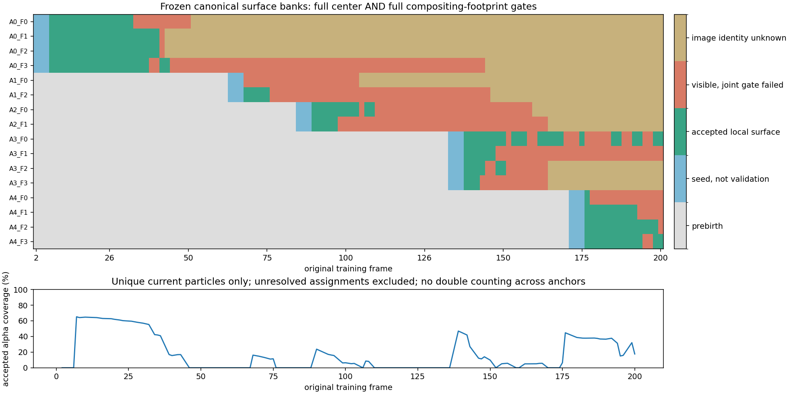
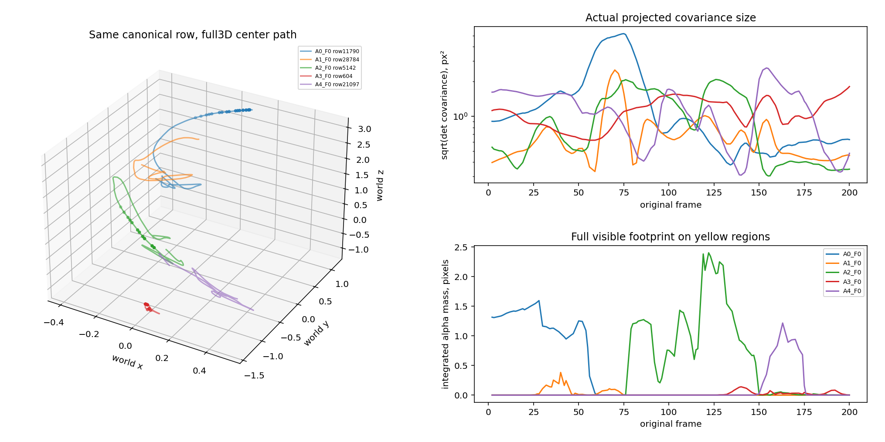

Same frozen rows are tested over all120 training frames, with full center motion and actual RGB alpha contributions. Local visible support is conditional evidence, NOT physical object/material identity. Grey means unknown; independent anchors are not merged. Three seed frames select each bank once; later frames validate it.
Assessment | Results | Independent verification

GT | latest local fragment evidence | frozen early centers | full early footprint | confirmed current centers | full current footprint / unknown grey. Colors are local component labels, not cross-time physical IDs.